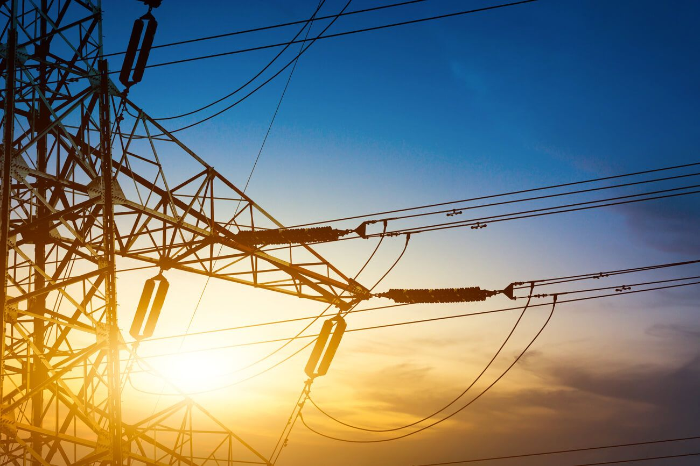

¿Qué aprenderás?
Conocimientos prácticos con enfoque normativo y técnico
- Métodos Wenner y Schlumberger
- Interpretación de resistividad
- Normativa IEEE y SEC
- Uso de telurímetros Megabras y AEMC
- Calibración y medición
- Resolución de errores
- Estructura profesional de informes
- Criterios normativos y casos reales
Medición y Diseño de Mallas Tierra
Con Marco Vidal, Ingeniero SEC con más de 15 años de experiencia en terreno.
Conoce a tu instructor

- 📅 10 al 11 de julio 2025 – 2 días intensivos
- 💻 Modalidad presencial u online
- 📘 Material incluido
- 📜 Certificado SEC incluido